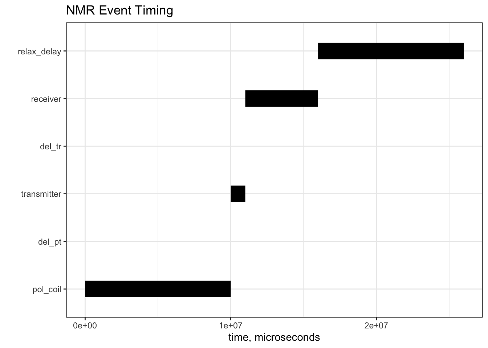
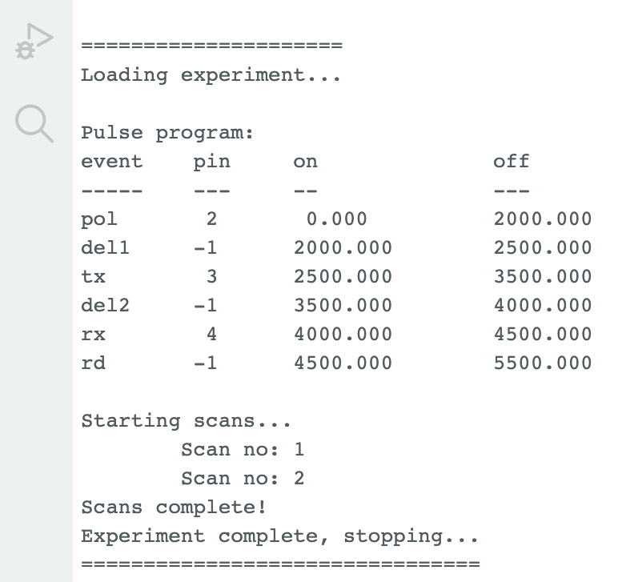

#'
#' Convert a Named Vector Giving Event Durations to a Data Frame
#'
#' @param event_lengths Numeric. A named numeric vector giving the durations (lengths)
#' of a series of events which occur in the given order.
#' @return A data frame containing the on and off times for each event.
#'
event_length_to_event_on_off <- function(event_lengths) {
off <- cumsum(event_lengths)
on <- c(0, off[1:(length(off) - 1)])
DF <- data.frame(event = names(event_lengths), on = on, off = off)
DF
}Building an EF-NMR Part 2
EF-NMR
DIY
C
Arduino
Proof of concept software, and a heckuva learning curve
With the polarization coil completed, I decided to take a stab at the software to control the instrument. I felt like I needed to get a feel for how to work with the Arduino so I would understand what kinds of signals I could send to the electronics. In turn that would (ideally) make it easier to understand how the circuits work.
I started by studying Michal’s software (available here). Michal’s software is designed for use with students in a lab course and includes a Python GUI, the actual Arduino control software, and several utilities. One of the utilities is a separate pulse programming module that produces a file accessed by the GUI. At least that appears to be the big picture. Inspection of the Arduino software made it clear that I had, and have, a lot to learn. Arduino code is written in C++, which encompases the earlier language C, which some have described as “dressed up assembly language”. Oh boy…
After studying some basic Arduino tutorials, I decided the best way to learn was to write my own software, starting with a simple case of an NMR-like interface that would turn Arduino pins on and off to control the various pieces of hardware I will eventually build. Turning pins on and off is really simple on the Arduino, that’s not the challenge. For this instrument, the challenge is that there are several events that occur one after the other on very short time scales. Roughly, one must turn the polarization coil on, then off, then turn on the transmitter and turn it off, and then turn on the receiver and listen. Due to the realities of electronics, there need to be short delays between some of these events so that the electronic signals can “warm up”, or “cool down”. To make this initial version manageable, I decided to not worry about the time scale in detail for now, and focus on building an extensible framework that takes NMR-like inputs to turn things on and off.
Prototype in R
Since R is my computational lingua franca, I decided to think about how I would set up a series of events in R and calculate their on/off times given the duration (or length) of each event. This was quite straightforward; if you know the duration of each event then the on/off times can be computed with a cumulative sum process.
And then I needed a function to visualize the result, which is basically a sort of Gantt chart where the events never overlap.
#'
#' Create a Gantt Chart of NMR Event Timing
#'
#' @param my_events Data frame.
#' @return `ggplot2` object.
#'
events <- function(my_events = NULL) {
p <- ggplot(my_events, aes(x = on, xend = off, y = event, yend = event))
p <- p + geom_segment(linewidth = 8) + theme_bw()
p <- p + labs(title = "NMR Event Timing", x = "time, microseconds", y = "")
p <- p + scale_y_discrete(limits = my_events$event)
p
}Figure 1 shows these functions in action. So far, so good.
f <- 1e6 # conversion factor, seconds to microseconds
ev <- c(10 * f, 5, 1 * f, 5, 5 * f, 10 * f )
names(ev) <- c("pol_coil", "del_pt", "transmitter", "del_tr", "receiver", "relax_delay")
p1 <- events(event_length_to_event_on_off(ev))
p1

Implementation in C
Next, I decided to write something more or less equivalent in C. This meant learning C. Suffice it to say, C provides none of the niceties of R. There are few atomic types in C, and in particular strings and arrays are not native entities. Instead, one must think in terms of pointers to particular memory addresses that hold the strings or arrays. So the entire paradigm is different, and requires thinking about solving problems in new ways. Overall, this has been a good experience. After a lot of struggle, I managed to write functions that carry out the equivalent of the R functions above, except instead of graphical output there is tabular output (there really is no graphical output in the usual sense for Arduino so we need to have other ways of verifying our results). I won’t give details of this work here, as the next section reviews how it was implemented for Arduino.
Implementation for Arduino
The version of event timing in C was adapted to the Arduino with relatively minor modifications, mostly related to how results are printed to the console (the C and C++ languages for Arduino are specialized versions of the languages). I also wrote a system to control the starting and stopping of the scans, thinking ahead of how the program is actually going to be used. All user inputs are in a single file, including a simple version of a pulse program (tons of work will be needed in the future on this piece). My overall goal is to write an entire NMR control and acquistion program that runs completely on the Arduino IDE. Well, almost completely: some other entity will have to slurp up the data coming from the Arduino, as there is very little memory on the Arduino. Not sure if this can be done but that’s the goal. The code for this project is stored in a public repo here.
The output of a “run” on this “instrument” is shown in Figure 2. The table lists the event name, the Arduino pin that should be activated, and the on/off times for the events. Times are in milliseconds in the example, and are relevant for testing, not an actual NMR scan. A pin value of -1 indicates no pin is active; such an event is just a delay period so the (not yet built) electronics can settle.

This program was further tested by wiring the Arduino to a breadboard with a few LEDs and resistors to limit the current to the LEDs appropriately. The video below shows the program in action, doing two scans with the durations as shown in Figure 2. The pins from left represent polarization coil power, transmit, and receive signal (the latter of course should be listening, not powering something). As a proof of concept I’m pretty happy with this result.
What’s Next?
So much to do, but I’m not in a hurry and can choose to do things in any order that inspires me:
- Polarization coil power supply circuit (some work done on this, just needs to be built)
- Transmitter circuit
- Receiver circuit
- Details of T/R on the Arduino; this will require another round of intense learning I’m certain!
Reuse
Citation
BibTeX citation:
@online{hanson2024,
author = {Hanson, Bryan},
title = {Building an {EF-NMR} {Part} 2},
date = {2024-01-01},
url = {http://chemospec.org/posts/2024-01-01-EF-NMR-Build-2/EF-NMR-Build-2.html},
langid = {en}
}
For attribution, please cite this work as:
Hanson, Bryan. 2024. “Building an EF-NMR Part 2.” January
1, 2024. http://chemospec.org/posts/2024-01-01-EF-NMR-Build-2/EF-NMR-Build-2.html.